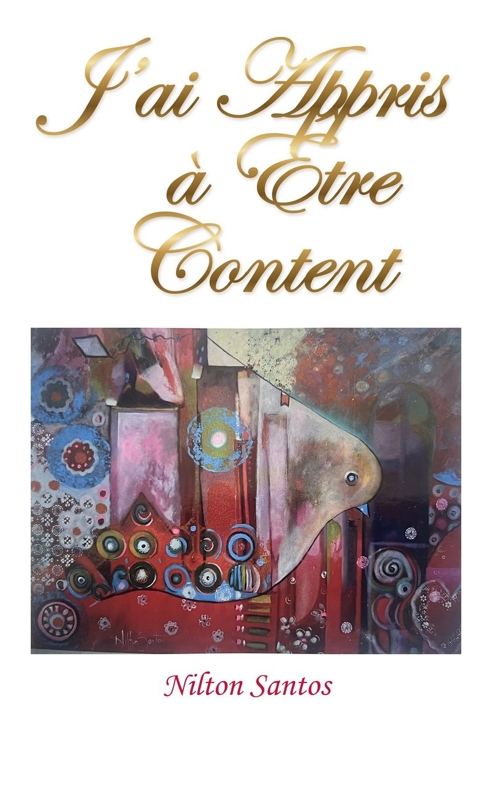
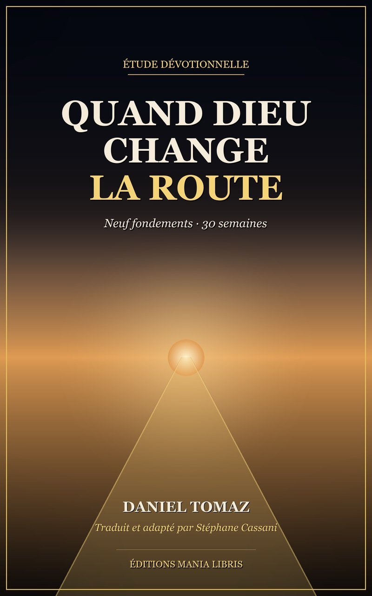

L’Arbre de vie
Une méditation pour chaque jour de l’année, groupée en douze fruits. Le livre audio suit le livre : un chapitre par fruit, du premier au douzième.
Chaque livre lu en entier, chapitre par chapitre. À écouter ici, ou à télécharger en un seul fichier .m4b que votre téléphone reprendra où vous l’avez laissé.
4 livres audio · 5 h 55 d’écoute · tous gratuits
Une méditation pour chaque jour de l’année, groupée en douze fruits. Le livre audio suit le livre : un chapitre par fruit, du premier au douzième.

Un mot oublié de l’hébreu, tsēlāʿ, et le récit du jardin change de sens. Le plus court des quatre : une écoute d’un seul trajet.

Le secret de Paul pour une vie libre et pleine de joie, par un pasteur psychologue de Goiânia. Traduit du portugais.

Une étude dévotionnelle sur trente semaines, du presbítero Daniel Tomaz. Traduite du portugais (Brésil) et lue par Stéphane Cassani.
Tous sont lus par Stéphane Cassani, avec une voix clonée à partir de la sienne. Le fichier .m4b garde les chapitres : ouvrez-le dans une application de livres audio — Apple Livres, Smart AudioBook Player, VLC — pour passer de l’un à l’autre.
Laissez votre adresse : vous recevrez un message quand un nouveau livre audio paraît, et rien d’autre. Une ligne suffit pour vous désinscrire. Le téléchargement reste libre, sans inscription.